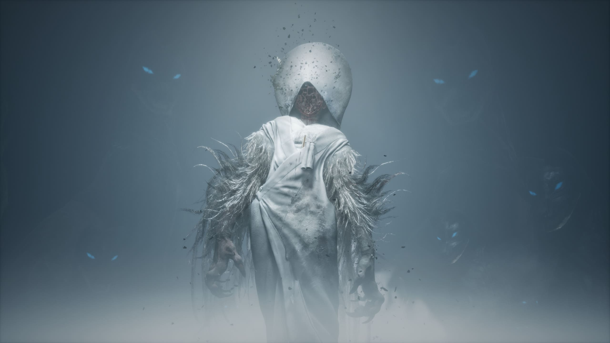
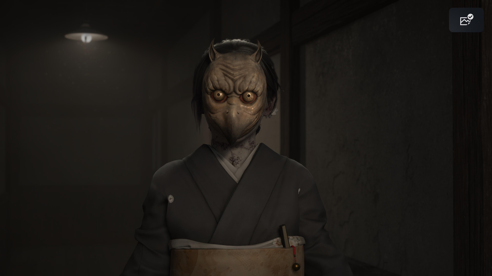

Il y a, dans l'ouverture de Silent Hill f, une image deceptivement simple : une adolescente parle à une poupée. Elle lui raconte que les autres filles refusaient de jouer avec elle, qu'elle préférait courir avec les garçons, inventer des jeux de guerre spatiale avec son ami d'enfance Shu. Puis sa sœur apparaît. Puis le brouillard descend. Puis la poupée disparaît. Cette séquence n'est pas un prologue : c'est le programme narratif entier du jeu, condensé en trois minutes. Tout ce que Silent Hill f va faire pendant les vingt heures suivantes, il l'a déjà dit là, dans ce dialogue entre une jeune fille et un jouet qu'elle aurait dû avoir oublié.
Ce qui suit est une tentative de lire cette œuvre à la manière dont elle mérite d'être lue — comme un palimpseste où chaque couche de sens en recouvre une autre sans l'effacer tout à fait. En suivant le fil de quatre figures centrales : Hinako, la protagoniste ; Shiromuku, le monstre du brouillard ; Junko, la sœur aînée ; et la poupée sans nom qui les relie toutes les trois.
I. Hinako, ou la poupée qui refuse de l'être
Le nom d'Hinako s'écrit 雛子. Le kanji 雛 (hina) porte deux significations superposées, et le jeu ne choisit pas entre elles : il les exploite simultanément. Hina désigne à la fois le poussin — l'oisillon encore incapable de voler — et la poupée de festival, celle qu'on expose pendant Hinamatsuri, la fête des filles, avant de la ranger dans une boîte pour le reste de l'année. Hinako est littéralement, dans son nom même, une poupée-oisillon : quelque chose de fragile et d'ornemental, quelque chose qui n'a pas encore d'ailes, quelque chose qu'on sort pour les cérémonies.
Ce n'est pas anodin que Ryukishi07 — scénariste de l'œuvre, connu pour son goût des structures signifiantes dans Higurashi et Umineko — ait construit son personnage sur cette ambivalence étymologique. L'arc d'Hinako est celui d'un être qui refuse obstinément d'être ce que son nom promet. Enfant, elle rejetait les jeux de poupée. Adolescente, elle refuse le mariage arrangé que son père a contracté en échange de ses dettes. Elle n'est pas passive, elle n'est pas douce, elle n'est pas exposée sans résistance. Et pourtant le monde autour d'elle — son père, Fox Mask, même Shu qui la drogue à son insu — traite son existence comme une marchandise à disposition.
Ce que l'horreur de Silent Hill f révèle, c'est que le monde ordinaire d'Hinako était déjà monstrueux avant que le brouillard ne descende. La ville enveloppée de champignons parasites n'est pas une rupture avec la réalité — c'est sa vérité mise à nu. La moisissure qui envahit les corps est la métaphore visible de ce qui rongeait Hinako de l'intérieur : la conviction progressive, inculquée par tous ceux qu'elle aime, qu'elle n'est pas une personne mais une fonction.
Silent Hill a toujours été moins une ville hantée qu'un espace où l'inconscient devient architecture. Dans le cas d'Hinako, cet inconscient dessine les contours d'un Japon patriarcal qui transforme les femmes en objets cérémoniels.
II. Shiromuku — le futur comme monstre

Le monstre du brouillard tel qu'Hinako refuse de le voir
Le « monstre du brouillard » qui hante Ebisugaoka porte un nom précis : Shiromuku. C'est le nom du kimono blanc traditionnel porté par les mariées japonaises lors de la cérémonie shinto. Un vêtement qui signifie littéralement « pur blanc » — et symboliquement : effacement de soi, purification de l'identité passée, absorption dans la famille du mari. La mariée en shiromuku devient une surface blanche sur laquelle une nouvelle existence sera inscrite.
Que le monstre s'appelle Shiromuku n'est pas une métaphore secondaire. C'est la structure entière du jeu. Shiromuku est Hinako elle-même — sa version future, celle qui a accepté le mariage, celle qui a laissé son visage se faire remplacer par un masque. Le monstre est semi-invisible lors des premières confrontations : Hinako ne peut pas encore le voir parce qu'elle refuse encore d'admettre ce qu'elle risque de devenir. La cécité du joueur face à l'ennemi est la cécité psychologique de la protagoniste rendue mécanique.
C'est là une des décisions narratives les plus élégantes du jeu : l'invisibilité du monstre n'est pas un effet de mise en scène — c'est du déni incarné. Le jeu fait jouer au joueur l'acte même de ne pas regarder en face ce que l'on refuse d'admettre. Et plus Hinako avance, plus sa faculté à percevoir Shiromuku se développe. Elle commence à voir le monstre au moment précis où elle commence à voir sa propre situation.
La transformation comme perte de surface
La trajectoire physique d'Hinako dans le jeu est celle d'un effacement progressif des frontières du moi. Elle se coud une patte de renard à la main. Elle remplace sa peau par un masque. À la fin, elle est devenue une mariée sans visage — une figure ornemental dont l'identité propre a été littéralement recouverte. Ce n'est pas une métamorphose horrifique au sens hollywoodien du terme. C'est une logique sociale poussée jusqu'à son terme visuel. Le système qui demande aux femmes d'effacer leur personnalité au moment du mariage, Ryukishi07 le rend littéral, le rend chair, le rend regardable.
Il est notable que cette transformation s'opère par couture et par masque — deux formes d'artisanat féminin traditionnel. Ce n'est pas la violence qui défigure Hinako : c'est l'accumulation patiente des gestes attendus d'elle.
III. Junko, ou la voie tracée
La sœur d'Hinako, Kinuta Junko, est l'un des personnages les plus fascinants du jeu précisément parce qu'elle n'est jamais réductible à un rôle simple. Elle n'est ni la méchante, ni la victime passive, ni le modèle positif. Elle est quelque chose de plus troublant : la preuve que le chemin existe, que d'autres l'ont pris, qu'il n'est pas insupportable — ou du moins que l'on peut apprendre à le supporter.
Le nom Junko — 潤子 — contient le caractère 潤 (jun), qui signifie « humide », « lustré », « prospère ». C'est le nom d'une femme faite pour la fertilité et l'harmonie domestique. Et le kanji 子 (ko), présent dans presque tous les noms féminins du jeu, inscrit chaque personnage dans une tradition nominale qui signifie « enfant » — les femmes sont nommées comme des enfants, comme des êtres en devenir perpétuel sous tutelle.

Junko et son masque d'oiseau
Dans le jeu, Junko porte un masque d'oiseau — non pas le tengu des légendes, mais quelque chose de plus ambigu, plus aviaire, peut-être un hibou. Si Hinako est la poussin (雛子) qui n'a pas encore volé, Junko est l'oiseau adulte qui a appris à voler dans la direction prescrite. Elle est belle, apaisante, et terriblement triste. Elle aime sa sœur. Et c'est précisément parce qu'elle l'aime qu'elle lui a transmis la conviction que le chemin le plus court vers le bonheur est la conformité — qu'il faut plier avant d'être brisée.
La cruauté du jeu est que Junko n'est pas fausse. Son affection pour Hinako est réelle. Mais l'amour ne protège pas ici — il transmet. La violence des normes sociales se perpétue précisément à travers les liens affectifs les plus sincères. C'est la sœur aimante qui enseigne à sa cadette comment disparaître en paix.
Junko est à la fois le modèle et l'avertissement. Elle prouve qu'on survit. Elle ne dit pas à quel prix.
L'apparition de Junko dans le jeu est toujours légèrement décalée, irréelle — on se demande si c'est la vraie Junko ou un fragment de l'esprit d'Hinako. Cette ambiguïté est fondamentale : Junko est autant un personnage qu'une instance psychique, la voix intériorisée de la conformité que toute femme sous pression finit par porter en elle.
IV. La poupée — ce qui a été joué, et ce qui a été refusé
La poupée qui apparaît dans la scène d'ouverture — et qui réapparaît ensuite comme figure d'avertissement — est l'objet le plus chargé du jeu. Non pas parce qu'elle représente l'enfance perdue au sens sentimental, mais parce qu'elle cristallise une contradiction fondamentale dans l'identité d'Hinako.
Hinako n'a jamais voulu jouer à la poupée. Les autres filles jouaient avec des poupées ; elle préférait les jeux d'action, les batailles spatiales inventées avec Shu. Et pourtant le jeu lui impose une poupée — lui en impose le nom (雛子), lui en impose le destin (la mariée sans visage, l'objet de cérémonie). La poupée qu'Hinako a refusé de manipuler enfant, c'est elle-même qu'on essaie d'en faire une.
Le fait que la poupée l'avertisse dans le jeu — qu'elle lui signale le danger de Fox Mask, qu'elle soit du côté de la résistance plutôt que de la capitulation — est l'inversion la plus belle du jeu. L'objet symbole de la féminité normative devient le porte-parole de la rébellion. Comme si ce qu'Hinako avait rejeté dans son enfance se retournait pour la défendre contre ce que cette même enfance avait promis de faire d'elle.
V. Ce que Silent Hill f dit qu'il dit — et ce qu'il dit en plus
À un premier niveau, Silent Hill f est un jeu sur le patriarcat japonais des années 1960, sur les mariages arrangés, sur les corps féminins traités comme monnaie d'échange. Ce niveau est réel, documenté, politiquement lisible et intentionnel — Ryukishi07 l'a dit lui-même en entretien.
Mais il y a un second niveau de lecture, plus vertigineux : celui de la construction même du joueur. Le jeu fait jouer une jeune fille qui refuse de voir son futur. Il place le joueur dans la position d'Hinako — incapable de voir Shiromuku au début, contraint de bâtir sa perception à mesure que la dénégation s'effrite. Le joueur n'observe pas le déni d'Hinako de l'extérieur ; il le joue. Il est Hinako refusant de regarder la mariée blanche.
C'est là que Silent Hill f rejoint la grande tradition du genre : l'horreur psychologique interactive n'est jamais seulement une histoire de peur. C'est une mécanique de mise en position, une façon de faire vivre une structure psychologique plutôt que de la décrire. Le brouillard n'est pas autour d'Hinako. Il est dans l'espace entre le joueur et l'écran.
Une prochaine entrée explorera les tensions orientalistes dans la réception occidentale de Silent Hill f — entre fascination et réduction, entre appropriation du folklore japonais et regard extérieur qui en fabrique l'étrangeté.